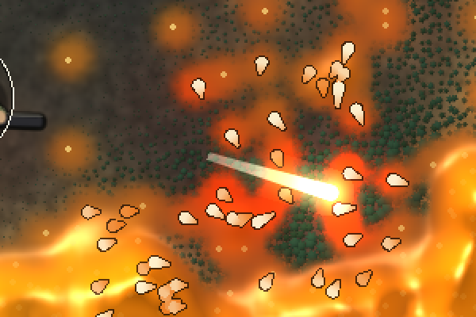
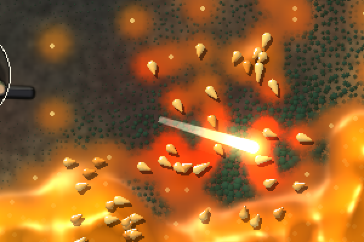

<title>Slime Droplets</title>
<meta name="claude:viewport-fit-sides" content="cover">
<link rel="stylesheet" href="https://fonts.googleapis.com/css2?family=Bricolage+Grotesque:opsz,wght@12..96,600;12..96,750&family=Source+Sans+3:wght@400;600&family=JetBrains+Mono:wght@400&display=swap">
<style>
/* Layout: one reading column; each scene is a pair, before on the left and after on the right (stacked on a phone), counts under each */
:root{
  --bg:#f3f2ec; --panel:#e8e6dc; --fg:#1d211c; --muted:#5b6157;
  --accent:#b0702a; --soft:#f1e3cf; --line:#cfccbf;
  --display:"Bricolage Grotesque", "Segoe UI", system-ui, sans-serif;
  --body:"Source Sans 3", "Segoe UI", system-ui, sans-serif;
  --mono:"JetBrains Mono", ui-monospace, Consolas, monospace;
}
@media (prefers-color-scheme: dark){:root:not([data-theme="light"]){
  --bg:#16140f; --panel:#221f18; --fg:#ebe7dd; --muted:#a39d8e;
  --accent:#e0a35a; --soft:#33291b; --line:#3a3428; color-scheme:dark}}
:root[data-theme="dark"]{
  --bg:#16140f; --panel:#221f18; --fg:#ebe7dd; --muted:#a39d8e;
  --accent:#e0a35a; --soft:#33291b; --line:#3a3428; color-scheme:dark}
body{background:var(--bg);color:var(--fg);font:17px/1.55 var(--body);margin:0;
  padding-left:max(16px,env(safe-area-inset-left,0px));padding-right:max(16px,env(safe-area-inset-right,0px));padding-block:28px 64px}
main{max-width:1180px;margin:0 auto;display:flex;flex-direction:column;gap:30px}
h1,h2,h3{font-family:var(--display);text-wrap:balance;line-height:1.15;margin:0}
h1{font-size:2.3rem;font-weight:750}
h2{font-size:1.45rem;font-weight:750;border-top:2px solid var(--accent);padding-top:14px}
h3{font-size:1.08rem;font-weight:600}
p{margin:0}
section{display:flex;flex-direction:column;gap:14px}
.lede{color:var(--muted);font-size:1.02rem;max-width:760px}
.eyebrow{font:12px/1 var(--mono);letter-spacing:.08em;text-transform:uppercase;color:var(--accent)}
.prose{max-width:760px}
code{font:0.86em var(--mono);background:var(--panel);padding:1px 4px;border-radius:3px}
.grid{display:grid;grid-template-columns:repeat(2,minmax(0,1fr));gap:16px}
@media (max-width:720px){.grid{grid-template-columns:minmax(0,1fr)}}
figure{margin:0;display:flex;flex-direction:column;gap:6px;min-width:0}
figure video,figure img{width:100%;height:auto;display:block;border-radius:6px;border:1px solid var(--line);background:#000}
figure img.px{image-rendering:pixelated}
figcaption{display:flex;align-items:baseline;gap:10px;flex-wrap:wrap;font-size:.92rem;color:var(--muted)}
.side{font:750 1.1rem/1 var(--display);color:var(--fg);min-width:4.6em}
.counts{font:13px/1.4 var(--mono);color:var(--fg);font-variant-numeric:tabular-nums}
.note{background:var(--soft);border-radius:8px;padding:16px 18px;max-width:760px;display:flex;flex-direction:column;gap:8px}
ul{margin:0;padding-left:1.2em;display:flex;flex-direction:column;gap:8px;max-width:760px}
footer{font-size:.85rem;color:var(--muted);max-width:760px}
</style>
<main>
<header style="display:flex;flex-direction:column;gap:10px">
  <span class="eyebrow">Larder World · Look A · 2026-11-18</span>
  <h1>The slime your shots blow out flies as slime</h1>
  <p class="lede">Every walker a shot kills is thrown out of the hit as a droplet. Those droplets were pale chips in a black outline, a cartoon style next to a slime drawn with light. They are now beads in the slime's own gold, lit from the same side as the slime with its wet glint, each with a small shadow where the outline was. Each pair below is one game drawn two ways, at the game's own pace.</p>
</header>

<section>
  <h2>Up close, zoom 12</h2>
  <p class="prose">The Fork, squad held with plain rounds, 31 s, at twice the pixels.</p>
  <div class="grid">
    <figure><figcaption><span class="side">Before</span><span class="counts">chips in a black outline</span></figcaption></figure>
    <figure><figcaption><span class="side">After</span><span class="counts">lit beads, each with a shadow</span></figcaption></figure>
  </div>
</section>

<section>
  <h2>A volley into the body, zoom 12</h2>
  <p class="prose">The Fork, 30 to 32 s: 206 shots and 1,267 kills by 32 s in both drawings.</p>
  <div class="grid">
    <figure><video src="fork12-before.mp4" poster="fork12-before.jpg" autoplay muted loop playsinline aria-label="Before, zoom 12: outlined chips fly out of each hit"></video><figcaption><span class="side">Before</span></figcaption></figure>
    <figure><video src="fork12-after.mp4" poster="fork12-after.jpg" autoplay muted loop playsinline aria-label="After, zoom 12: gold beads fly out of each hit"></video><figcaption><span class="side">After</span><span class="counts">0.50% of the picture changed (1.24% at most)</span></figcaption></figure>
  </div>
</section>

<section>
  <h2>The same, zoom 6</h2>
  <div class="grid">
    <figure><video src="fork6-before.mp4" poster="fork6-before.jpg" autoplay muted loop playsinline aria-label="Before, zoom 6"></video><figcaption><span class="side">Before</span></figcaption></figure>
    <figure><video src="fork6-after.mp4" poster="fork6-after.jpg" autoplay muted loop playsinline aria-label="After, zoom 6"></video><figcaption><span class="side">After</span><span class="counts">0.16% of the picture changed (0.38% at most)</span></figcaption></figure>
  </div>
</section>

<section>
  <h2>The gun range, zoom 12</h2>
  <p class="prose">Four soldiers firing into the slime from a standstill, 2.5 to 4.5 s: 20 shots and 167 kills by 5 s in both drawings.</p>
  <div class="grid">
    <figure><video src="range-before.mp4" poster="range-before.jpg" autoplay muted loop playsinline aria-label="Before: the gun range"></video><figcaption><span class="side">Before</span></figcaption></figure>
    <figure><video src="range-after.mp4" poster="range-after.jpg" autoplay muted loop playsinline aria-label="After: the gun range"></video><figcaption><span class="side">After</span><span class="counts">0.17% of the picture changed (0.64% at most; droplets in 26 of 61 frames)</span></figcaption></figure>
  </div>
</section>

<section>
  <h2>What to look for</h2>
  <ul>
    <li><strong>Each droplet's upper left catches the light and its lower right falls darker,</strong> as the slime's own veins do, with a pinpoint glint on the fastest.</li>
    <li><strong>Fast droplets glow pale gold and cool to deep orange as they land,</strong> where before they went from white to orange.</li>
    <li><strong>Over the bright body, the shadow keeps them apart from it,</strong> which is what the black outline was for.</li>
  </ul>
  <div class="note">
    <h3>Also seen</h3>
    <p>The shots themselves already fly as short bright comets, so that item on the look list is closed. Zoomed out to 6 the droplets are a few pixels each and quieter than the outlined chips were; if hits read too quiet in play, the glow is one number to turn up.</p>
  </div>
</section>

<footer>Filmed on the software renderer. Changed is the share of the clip's picture where any colour channel differs by more than 12 of 255 between the two drawings of the same frame. Source and numbers: <code>Reports/droplets-2026-11-18/</code> in the repo.</footer>
</main>
